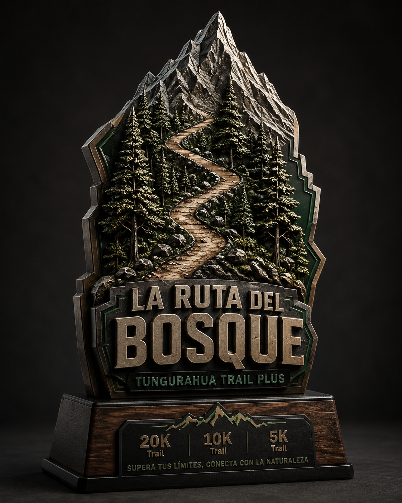
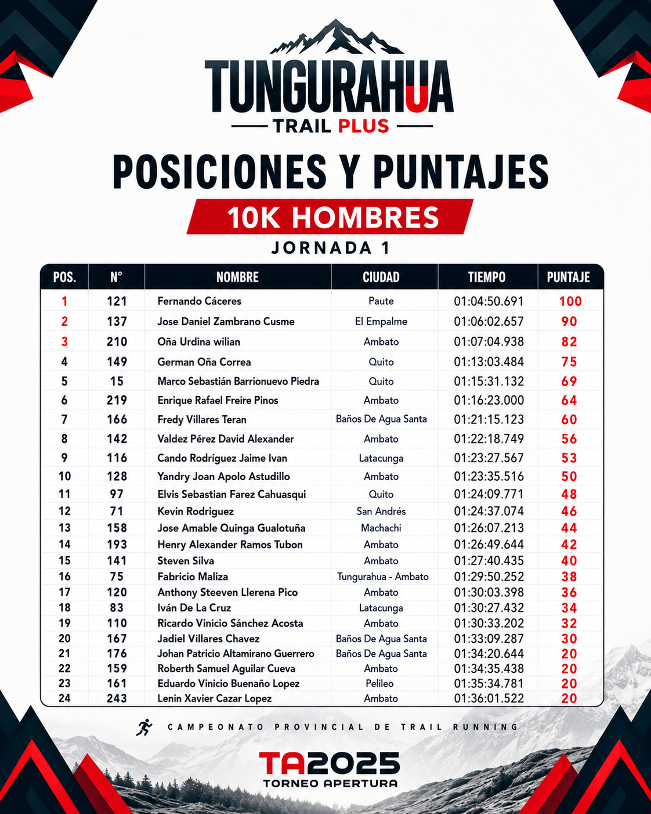

TEMPORADA 2026
TUNGURAHUA
TRAIL PLUS
Montaña, bosque, ciudad y cascadas. Una comunidad que corre, compite y descubre Tungurahua.
SOMOS TUNGURAHUA TRAIL PLUS
EXPERIENCIAS QUE
DEJAN HUELLA.
Organizamos experiencias de trail running que conectan deporte, territorio y comunidad. Cada carrera tiene una identidad propia y un recorrido pensado para que el corredor viva Tungurahua de una forma distinta.
PRÓXIMAS EXPERIENCIAS
CARRERAS ACTIVAS
Elige tu próximo reto. Cada evento tendrá su propia página con información, rutas, kit, reglamento, fotografías e inscripción.
TEMPORADA 2026
CAMPEONATO PROVINCIAL
DE TRAIL RUNNING
Tres territorios. Tres válidas. Una clasificación provincial.

MEMORIAS DE CARRERA
GALERÍA HISTÓRICA
Una selección de nuestros eventos. Cada edición podrá abrir un álbum completo de fotografías.

CLASIFICACIONES
RESULTADOS
OFICIALES
Consulta posiciones, puntajes acumulados y resultados de las válidas del Campeonato Provincial.
Ver resultadosALIADOS ESTRATÉGICOS
MARCAS QUE HACEN POSIBLE
LA EXPERIENCIA
TUNGURAHUA TRAIL PLUS
VIVE LA
PRÓXIMA RUTA.
Inscripciones, novedades y próximas fechas en nuestros canales oficiales.